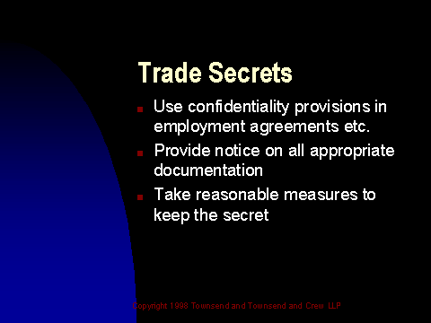

Slide 17 of 24
Notes:
To protect information as a trade secret, you must take reasonable measures to keep it secret.
Such as:
1. Notice on all appropriate documents
2. Confidentiality provisions in employment agreements, contractor agreements, and such.